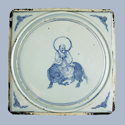

Laozi born
Ming Dynasty ceramic tile with portrait of Laozi
Laozi, who was born around 604 B.C., is credited as being the originator of Daoism. Daoism is the belief that one must follow the 'Way' (or Dao) - the force or energy that is the source of all that happens. Daoists believe that people should lead simple lives and not disrupt the balance of the natural world. No one knows very much about Laozi's life - we don't even know his real name (Laozi means 'Old Master'). In legend his mother carried him in her womb for years, then gave birth to him from her armpit. He was born with magical powers that allowed him to prolong his life. When he was a very old man he rode off to the Western paradise on a water buffalo and was never seen again. |